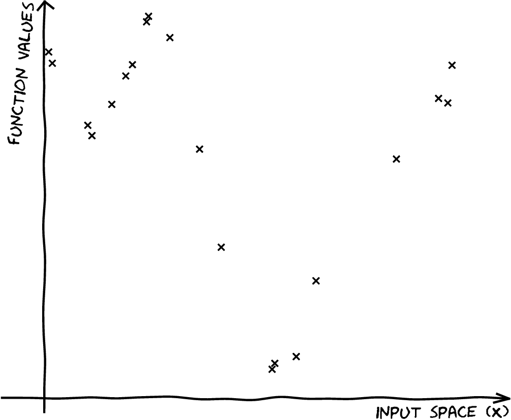
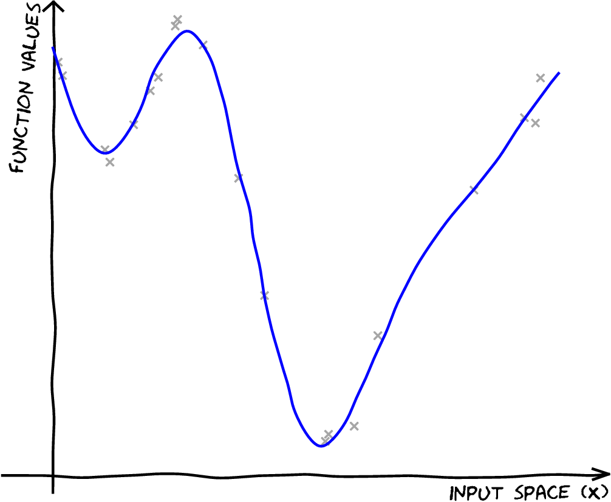

Figure: In recent years, approximations for Gaussian process models haven’t been the most fashionable approach to machine learning. Image credit: Kai Arulkumaran
Figure: In recent years, approximations for Gaussian process models haven’t been the most fashionable approach to machine learning. Image credit: Kai Arulkumaran
Inference in a Gaussian process has computational complexity of $\bigO(\numData^3)$ and storage demands of $\bigO(\numData^2)$. This is too large for many modern data sets.
Low rank approximations allow us to work with Gaussian processes with computational complexity of $\bigO(\numData\numInducing^2)$ and storage demands of $\bigO(\numData\numInducing)$, where $\numInducing$ is a user chosen parameter.
In machine learning, low rank approximations date back to Smola and Bartlett (n.d.), Williams and Seeger (n.d.), who considered the Nyström approximation and Csató and Opper (2002);Csató (2002) who considered low rank approximations in the context of on-line learning. Selection of active points for the approximation was considered by Seeger, Williams, and Lawrence (n.d.) and Snelson and Ghahramani (n.d.) first proposed that the active set could be optimized directly. Those approaches were reviewed by Quiñonero Candela and Rasmussen (2005) under a unifying likelihood approximation perspective. General rules for deriving the maximum likelihood for these sparse approximations were given in Lawrence (n.d.).
Modern variational interpretations of these low rank approaches were first explored in Titsias (n.d.). A more modern summary which considers each of these approximations as an α-divergence is given by Bui, Yan, and Turner (2017).
[edit]
Inducing variables are a compression of the real observations. The basic idea is can I create a new data set that summarizes all the information in the original data set. If this data set is smaller, I’ve compressed the information in the original data set.
Inducing variables can be thought of as pseudo-data, indeed in Snelson and Ghahramani (n.d.) they were referred to as pseudo-points.
The only requirement for inducing variables is that they are jointly distributed as a Gaussian process with the original data. This means that they can be from the space $\mappingFunctionVector$ or a space that is related through a linear operator (see e.g. Álvarez et al. (2010)). For example we could choose to store the gradient of the function at particular points or a value from the frequency spectrum of the function (Lázaro-Gredilla, Quiñonero-Candela, and Rasmussen 2010).
Inducing variables don’t only allow for the compression of the non-parameteric information into a reduced data aset but they also allow for computational scaling of the algorithms through, for example stochastic variational approaches Hensman, Fusi, and Lawrence (n.d.) or parallelization Gal, Wilk, and Rasmussen (n.d.),Dai et al. (2014), Seeger et al. (2017).
We’ve seen how we go from parametric to non-parametric. The limit implies infinite dimensional $\mappingVector$. Gaussian processes are generally non-parametric: combine data with covariance function to get model. This representation cannot be summarized by a parameter vector of a fixed size.
Parametric models have a representation that does not respond to increasing training set size. Bayesian posterior distributions over parameters contain the information about the training data, for example if we use use Bayes’ rule from training data,
$$
p\left(\mappingVector|\dataVector, \inputMatrix\right),
$$
to make predictions on test data
$$
p\left(\dataScalar_*|\inputMatrix_*, \dataVector, \inputMatrix\right) = \int
p\left(\dataScalar_*|\mappingVector,\inputMatrix_*\right)p\left(\mappingVector|\dataVector,
\inputMatrix)\text{d}\mappingVector\right)
$$
then $\mappingVector$ becomes a bottleneck for information about the training set to pass to the test set. The solution is to increase $\numBasisFunc$ so that the bottleneck is so large that it no longer presents a problem. How big is big enough for $\numBasisFunc$? Non-parametrics says $\numBasisFunc \rightarrow \infty$.
Now no longer possible to manipulate the model through the standard parametric form. However, it is possible to express parametric as GPs:
$$
\kernelScalar\left(\inputVector_i,\inputVector_j\right)=\basisFunction_:\left(\inputVector_i\right)^\top\basisFunction_:\left(\inputVector_j\right).
$$
These are known as degenerate covariance matrices. Their rank is at most $\numBasisFunc$, non-parametric models have full rank covariance matrices. Most well known is the “linear kernel”,
$$
\kernelScalar(\inputVector_i, \inputVector_j) = \inputVector_i^\top\inputVector_j.
$$
For non-parametrics prediction at a new point, $\mappingFunctionVector_*$, is made by conditioning on $\mappingFunctionVector$ in the joint distribution. In GPs this involves combining the training data with the covariance function and the mean function. Parametric is a special case when conditional prediction can be summarized in a fixed number of parameters. Complexity of parametric model remains fixed regardless of the size of our training data set. For a non-parametric model the required number of parameters grows with the size of the training data.

The Nystr"om approximation takes the form,
$$
\Kff \approx \Qff = \Kfu \Kuu^{-1}\Kuf
$$
The idea is that instead of inverting $\Kff$, we make a low rank (or Nyström) approximation, and invert $\Kuu$ instead.
In the original Nystr"om method the columns to incorporate are sampled from the complete set of columns (without replacement). In a kernel matrix each of these columns corresponds to a data point. In the Nystr"om method these points are sometimes called landmark points.
|
$$\inputMatrix,\,\dataVector$$ |

|
|
$$\inputMatrix,\,\dataVector$$ $${\color{blue} \mappingFunction(\inputVector)} \sim {\mathcal GP}$$ |

|
|
$$\inputMatrix,\,\dataVector$$ $$\mappingFunction(\inputVector) \sim {\mathcal GP}$$ $$p({\color{blue} \mappingFunctionVector}) = \gaussianSamp{\zerosVector}{\Kff}$$ |

|
|
$$ \inputMatrix,\,\dataVector$$ $$\mappingFunction(\inputVector) \sim {\mathcal GP} $$ $$ p(\mappingFunctionVector) = \gaussianSamp{\zerosVector}{\Kff} $$ $$p( \mappingFunctionVector \given \dataVector,\inputMatrix) $$ |

|
Take an extra $\numInducing$ points on the function, $\inducingVector = \mappingFunction(\inducingInputMatrix)$.
$$p(\dataVector,\mappingFunctionVector,\inducingVector) = p(\dataVector\given \mappingFunctionVector) p(\mappingFunctionVector\given \inducingVector) p(\inducingVector)$$

Take and extra M points on the function, $\inducingVector = \mappingFunction(\inducingInputMatrix)$.
$$p(\dataVector,\mappingFunctionVector,\inducingVector) = p(\dataVector\given \mappingFunctionVector) p(\mappingFunctionVector\given \inducingVector) p(\inducingVector)$$
$$\begin{aligned}
p(\dataVector\given\mappingFunctionVector) &= \gaussianDist{\dataVector}{\mappingFunctionVector}{\dataStd^2 \eye}\\
p(\mappingFunctionVector\given\inducingVector) &= \gaussianDist{\mappingFunctionVector}{ \Kfu\Kuu^{-1}\inducingVector}{ \tilde{\kernelMatrix}}\\
p(\inducingVector) &= \gaussianDist{\inducingVector}{ \zerosVector}{\Kuu}
\end{aligned}$$
|
$$\inputMatrix,\,\dataVector$$ $$\mappingFunction(\inputVector) \sim {\mathcal GP}$$ $$p(\mappingFunctionVector) = \gaussianSamp{\zerosVector}{\Kff}$$ $$p(\mappingFunctionVector\given \dataVector,\inputMatrix)$$ |
|
$$
\begin{align}
&\qquad\inducingInputMatrix, \inducingVector\\ &p({\color{red} \inducingVector}) = \gaussianSamp{\zerosVector}{\Kuu}\end{align}
$$
|
$$\inputMatrix,\,\dataVector$$ $$\mappingFunction(\inputVector) \sim {\mathcal GP}$$ $$p(\mappingFunctionVector) = \gaussianSamp{\zerosVector}{\Kff}$$ $$p(\mappingFunctionVector\given \dataVector,\inputMatrix)$$ $$p(\inducingVector) = \gaussianSamp{\zerosVector}{\Kuu}$$ $$\widetilde p({\color{red}\inducingVector}\given \dataVector,\inputMatrix)$$ |

|
Instead of doing
$$
p(\mappingFunctionVector\given\dataVector,\inputMatrix) = \frac{p(\dataVector\given\mappingFunctionVector)p(\mappingFunctionVector\given\inputMatrix)}{\int p(\dataVector\given\mappingFunctionVector)p(\mappingFunctionVector\given\inputMatrix){\text{d}\mappingFunctionVector}}
$$
We’ll do
$$
p(\inducingVector\given\dataVector,\inducingInputMatrix) = \frac{p(\dataVector\given\inducingVector)p(\inducingVector\given\inducingInputMatrix)}{\int p(\dataVector\given\inducingVector)p(\inducingVector\given\inducingInputMatrix){\text{d}\inducingVector}}
$$
[edit]
The conditional density of the data given the inducing points can be lower bounded variationally
$$
\begin{aligned}
\log p(\dataVector|\inducingVector) & = \log \int p(\dataVector|\mappingFunctionVector) p(\mappingFunctionVector|\inducingVector) \text{d}\mappingFunctionVector\\ & = \int q(\mappingFunctionVector) \log \frac{p(\dataVector|\mappingFunctionVector) p(\mappingFunctionVector|\inducingVector)}{q(\mappingFunctionVector)}\text{d}\mappingFunctionVector + \KL{q(\mappingFunctionVector)}{p(\mappingFunctionVector|\dataVector, \inducingVector)}.
\end{aligned}
$$
The key innovation from Titsias (n.d.) was to then make a particular choice for $q(\mappingFunctionVector)$. If we set $q(\mappingFunctionVector)=p(\mappingFunctionVector|\inducingVector)$,
$$
\log p(\dataVector|\inducingVector) \geq \int p(\mappingFunctionVector|\inducingVector) \log p(\dataVector|\mappingFunctionVector)\text{d}\mappingFunctionVector.
$$
$$
p(\dataVector|\inducingVector) \geq \exp \int p(\mappingFunctionVector|\inducingVector) \log p(\dataVector|\mappingFunctionVector)\text{d}\mappingFunctionVector.
$$
Maximizing the lower bound minimizes the Kullback-Leibler divergence (or information gain) between our approximating density, $p(\mappingFunctionVector|\inducingVector)$ and the true posterior density, $p(\mappingFunctionVector|\dataVector, \inducingVector)$.
$$
\KL{p(\mappingFunctionVector|\inducingVector)}{p(\mappingFunctionVector|\dataVector, \inducingVector)} = \int p(\mappingFunctionVector|\inducingVector) \log \frac{p(\mappingFunctionVector|\inducingVector)}{p(\mappingFunctionVector|\dataVector, \inducingVector)}\text{d}\inducingVector
$$
This bound is minimized when the information stored about $\dataVector$ is already stored in $\inducingVector$. In other words, maximizing the bound seeks an optimal compression from the information gain perspective.
For the case where $\inducingVector = \mappingFunctionVector$ the bound is exact ($\mappingFunctionVector$ d-separates $\dataVector$ from $\inducingVector$).
The quality of the resulting bound is determined by the choice of the inducing variables. You are free to choose whichever heuristics you like for the inducing variables, as long as they are drawn jointly from a valid Gaussian process, i.e. such that
$$
\begin{bmatrix}
\mappingFunctionVector\\
\inducingVector
\end{bmatrix} \sim \gaussianSamp{\zerosVector}{\kernelMatrix}
$$
where the kernel matrix itself can be decomposed into
$$
\kernelMatrix =
\begin{bmatrix}
\Kff & \Kfu \\
\Kuf & \Kuu
\end{bmatrix}
$$
Choosing the inducing variables amounts to specifying $\Kfu$ and $\Kuu$ such that $\kernelMatrix$ remains positive definite. The typical choice is to choose $\inducingVector$ in the same domain as $\mappingFunctionVector$, associating each inducing output, $\inducingScalar_i$ with a corresponding input location $\inducingInputVector$. However, more imaginative choices are absolutely possible. In particular, if $\inducingVector$ is related to $\mappingFunctionVector$ through a linear operator (see e.g. Álvarez et al. (2010)), then valid $\Kuu$ and $\Kuf$ can be constructed. For example we could choose to store the gradient of the function at particular points or a value from the frequency spectrum of the function (Lázaro-Gredilla, Quiñonero-Candela, and Rasmussen 2010).
Inducing variables don’t only allow for the compression of the non-parameteric information into a reduced data set but they also allow for computational scaling of the algorithms through, for example stochastic variational approaches(Hoffman et al. 2012; Hensman, Fusi, and Lawrence, n.d.) or parallelization (Gal, Wilk, and Rasmussen, n.d.; Dai et al. 2014; Seeger et al. 2017).
If the likelihood, $p(\dataVector|\mappingFunctionVector)$, factorizes
<8-> Then the bound factorizes.
<10-> Now need a choice of distributions for $\mappingFunctionVector$ and $\dataVector|\mappingFunctionVector$ …
Choose to go a different way.
Introduce a set of auxiliary variables, $\inducingVector$, which are m in length.
They are like “artificial data”.
Used to induce a distribution: $q(\inducingVector|\dataVector)$
Introduce variable set which is finite dimensional.
$$
p(\dataVector^*|\dataVector) \approx \int p(\dataVector^*|\inducingVector) q(\inducingVector|\dataVector) \text{d}\inducingVector
$$
But dimensionality of $\inducingVector$ can be changed to improve approximation.
Model for our data, $\dataVector$
|
|
Prior density over $\mappingFunctionVector$. Likelihood relates data, $\dataVector$, to $\mappingFunctionVector$.
|
|
Prior density over $\mappingFunctionVector$. Likelihood relates data, $\dataVector$, to $\mappingFunctionVector$.
|
|
|
$$p(\dataVector)=\int \int p(\dataVector|\mappingFunctionVector)p(\mappingFunctionVector|\inducingVector)\text{d}\mappingFunctionVector p(\inducingVector)\text{d}\inducingVector$$ |
|
$$p(\dataVector)=\int \int p(\dataVector|\mappingFunctionVector)p(\mappingFunctionVector|\inducingVector)\text{d}\mappingFunctionVector p(\inducingVector)\text{d}\inducingVector$$ |
|
$$p(\dataVector|\inducingVector)=\int p(\dataVector|\mappingFunctionVector)p(\mappingFunctionVector|\inducingVector)\text{d}\mappingFunctionVector$$ |
|
$$p(\dataVector|\inducingVector)$$ |
|
$$p(\dataVector|\paramVector)$$ |
$$\mappingFunctionVector, \inducingVector \sim \gaussianSamp{\mathbf{0}}{\begin{bmatrix}\Kff & \Kfu\\\Kuf & \Kuu\end{bmatrix}}$$
$$\dataVector|\mappingFunctionVector = \prod_{i} \gaussianSamp{\mappingFunction}{\dataStd^2}$$
For Gaussian likelihoods:
Define:
$$q_{i, i} = \varianceDist{\mappingFunction_i}{p(\mappingFunction_i|\inducingVector)} = \expDist{\mappingFunction_i^2}{p(\mappingFunction_i|\inducingVector)} - \expDist{\mappingFunction_i}{p(\mappingFunction_i|\inducingVector)}^2$$
We can write:
$$c_i = \exp\left(-{\frac{q_{i,i}}{2\dataStd^2}}\right)$$
If joint distribution of $p(\mappingFunctionVector, \inducingVector)$ is Gaussian then:
$$q_{i, i} = \kernelScalar_{i, i} - \kernelVector_{i, \inducingVector}^\top \kernelMatrix_{\inducingVector, \inducingVector}^{-1} \kernelVector_{i, \inducingVector}$$
ci is not a function of $\inducingVector$ but is a function of $\inputMatrix_\inducingVector$.
The sum of qi, i is the total conditional variance.
If conditional density $p(\mappingFunctionVector|\inducingVector)$ is Gaussian then it has covariance
$$\mathbf{Q} = \kernelMatrix_{\mappingFunctionVector\mappingFunctionVector} - \kernelMatrix_{\mappingFunctionVector \inducingVector}\kernelMatrix_{\inducingVector\inducingVector}^{-1} \kernelMatrix_{\inducingVector\mappingFunctionVector}$$
$\trace{\mathbf{Q}} = \sum_{i}q_{i,i}$ is known as total variance.
Because it is on conditional distribution we call it total conditional variance.
Measure the ’capacity of a density’.
Determinant of covariance represents ’volume’ of density.
log determinant is entropy: sum of log eigenvalues of covariance.
trace of covariance is total variance: sum of eigenvalues of covariance.
λ > log λ then total conditional variance upper bounds entropy.
Exponentiated total variance bounds determinant.
$$\det{\mathbf{Q}} < \exp \trace{\mathbf{Q}}$$
Because
$$\prod_{i=1}^k \lambda_i < \prod_{i=1}^k \exp(\lambda_i)$$
where {λi}i = 1k are the positive eigenvalues of Q This in turn implies
$$\det{\mathbf{Q}} < \prod_{i=1}^k \exp\left(q_{i,i}\right)$$
Conditional density $p(\mappingFunctionVector|\inducingVector)$ can be seen as a communication channel.
Normally we have:
$$\text{Transmitter} \stackrel{\inducingVector}{\rightarrow} \begin{smallmatrix}p(\mappingFunctionVector|\inducingVector) \\ \text{Channel}\end{smallmatrix} \stackrel{\mappingFunctionVector}{\rightarrow} \text{Receiver}$$
and we control $p(\inducingVector)$ (the source density).
Here we can also control the transmission channel $p(\mappingFunctionVector|\inducingVector)$.
Substitute variational bound into marginal likelihood:
$$p(\dataVector)\geq \prod_{i=1}^\numData c_i \int \gaussianDist{\dataVector}{\expSamp{\mappingFunctionVector}}{\dataStd^2\eye}p(\inducingVector) \text{d}\inducingVector$$
Note that:
$$\expDist{\mappingFunctionVector}{p(\mappingFunctionVector|\inducingVector)} = \kernelMatrix_{\mappingFunctionVector, \inducingVector} \kernelMatrix_{\inducingVector, \inducingVector}^{-1}\inducingVector$$
is linearly dependent on $\inducingVector$.
Making the marginalization of $\inducingVector$ straightforward. In the Gaussian case:
$$p(\inducingVector) = \gaussianDist{\inducingVector}{\zerosVector}{\kernelMatrix_{\inducingVector,\inducingVector}}$$
$$\log p(\dataVector\given\inducingVector) = \log\int p(\dataVector \given\mappingFunctionVector)p(\mappingFunctionVector\given\inducingVector,\inputMatrix)\text{d}\mappingFunctionVector$$
$$\log p(\dataVector\given\inducingVector) = \log \mathbb{E}_{p(\mappingFunctionVector\given \inducingVector,\inputMatrix)}\left[p(\dataVector \given\mappingFunctionVector)\right]$$
$$\log p(\dataVector\given\inducingVector) \geq \mathbb{E}_{p(\mappingFunctionVector\given \inducingVector,\inputMatrix)}\left[\log p(\dataVector \given\mappingFunctionVector)\right]\triangleq \log\widetilde p(\dataVector\given \inducingVector)$$
No inversion of $\Kff$ required
Titsias (n.d.)
$$p(\dataVector\given\inducingVector) = \frac{p(\dataVector \given\mappingFunctionVector)p(\mappingFunctionVector\given\inducingVector)}{p(\mappingFunctionVector\given\dataVector, \inducingVector)}$$
$$\log p(\dataVector\given\inducingVector) = \log p(\dataVector \given\mappingFunctionVector) + \log \frac{p(\mappingFunctionVector\given\inducingVector)}{p(\mappingFunctionVector\given\dataVector, \inducingVector)}$$
$$\log p(\dataVector\given\inducingVector) = \bbE_{p(\mappingFunctionVector\given\inducingVector)}\big[\log p(\dataVector \given\mappingFunctionVector)\big] + \bbE_{p(\mappingFunctionVector\given\inducingVector)}\big[\log \frac{p(\mappingFunctionVector\given\inducingVector)}{p(\mappingFunctionVector\given\dataVector, \inducingVector)}\big]$$
$$\log p(\dataVector\given\inducingVector) = \widetilde p(\dataVector\given\inducingVector) + \textsc{KL}[p(\mappingFunctionVector|\inducingVector)||p(\mappingFunctionVector\given\dataVector, \inducingVector)]$$
No inversion of $\Kff$ required
$$\widetilde p(\dataVector\given\inducingVector) = \prod_{i=1}^\numData \widetilde p(\dataScalar_i\given\inducingVector)$$
$$\widetilde p(\dataScalar\given\inducingVector) = \gaussianDist{\dataScalar}{\kfu\Kuu^{-1}\inducingVector}{\dataStd^2} \,{\color{red}\exp\left\{-\tfrac{1}{2\dataStd^2}\left(\kff- \kfu\Kuu^{-1}\kuf\right)\right\}}$$
A straightforward likelihood approximation, and a penalty term
$$\widetilde p(\inducingVector\given\dataVector,\inducingInputMatrix) = \frac{\widetilde p(\dataVector\given\inducingVector)p(\inducingVector\given\inducingInputMatrix)}{\int \widetilde p(\dataVector\given\inducingVector)p(\inducingVector\given\inducingInputMatrix)\text{d}{\inducingVector}}$$
Computing the posterior costs $\bigO(\numData\numInducing^2)$
We also get a lower bound of the marginal likelihood
$${\color{red}\sum_{i=1}^\numData-\tfrac{1}{2\dataStd^2}\left(\kff- \kfu\Kuu^{-1}\kuf\right)}$$
$${\color{red}\sum_{i=1}^\numData-\tfrac{1}{2\dataStd^2}\left(\kff - \kfu\Kuu^{-1}\kuf\right)}$$
It’s easy to show that as $\inducingInputMatrix \to \inputMatrix$:
$\inducingVector \to \mappingFunctionVector$ (and the posterior is exact)
The penalty term is zero.
The cost returns to $\bigO(\numData^3)$
So far we:
introduced $\inducingInputMatrix, \inducingVector$
approximated the intergral over $\mappingFunctionVector$ variationally
captured the information in $\widetilde p(\inducingVector\given \dataVector)$
obtained a lower bound on the marginal likeihood
saw the effect of the penalty term
prediction for new points
Omitted details:
optimization of the covariance parameters using the bound
optimization of Z (simultaneously)
the form of $\widetilde p(\inducingVector\given \dataVector)$
historical approximations
Subset selection Lawrence, Seeger, and Herbrich (n.d.)
Random or systematic
Set $\inducingInputMatrix$ to subset of $\inputMatrix$
Set $\inducingVector$ to subset of $\mappingFunctionVector$
Approximation to $p(\dataVector\given \inducingVector)$:
$ p(_i) = p(_i_i) i$
$ p(_i) = 1 i$
Quiñonero Candela and Rasmussen (2005) {Deterministic Training Conditional (DTC)}
Approximation to $p(\dataVector\given \inducingVector)$:
As our variational formulation, but without penalty
Optimization of $\inducingInputMatrix$ is difficult
Fully Independent Training Conditional Snelson and Ghahramani (n.d.)
Approximation to $p(\dataVector\given \inducingVector)$:
$ p() = _i p(_i) $
Optimization of $\inducingInputMatrix$ is still difficult, and there are some weird heteroscedatic effects
|
Bayesian GP-LVM
|
|
[edit]
The standard variational approach would require the expectation of $\log p(\dataVector|\latentMatrix)$ under $q(\latentMatrix)$.
$$
\begin{align}
\log p(\dataVector|\latentMatrix) = & -\frac{1}{2}\dataVector^\top\left(\kernelMatrix_{\mappingFunctionVector, \mappingFunctionVector}+\dataStd^2\eye\right)^{-1}\dataVector \\ & -\frac{1}{2}\log \det{\kernelMatrix_{\mappingFunctionVector, \mappingFunctionVector}+\dataStd^2 \eye} -\frac{\numData}{2}\log 2\pi
\end{align}
$$
But this is extremely difficult to compute because $\kernelMatrix_{\mappingFunctionVector, \mappingFunctionVector}$ is dependent on $\latentMatrix$ and it appears in the inverse.
The alternative approach is to consider the collapsed variational bound (used for low rank (sparse is a misnomer) Gaussian process approximations.
$$
p(\dataVector)\geq \prod_{i=1}^\numData c_i \int \gaussianDist{\dataVector}{\expSamp{\mappingFunctionVector}}{\dataStd^2\eye}p(\inducingVector) \text{d}\inducingVector
$$
$$
p(\dataVector|\latentMatrix )\geq \prod_{i=1}^\numData c_i \int \gaussianDist{\dataVector}{\expDist{\mappingFunctionVector}{p(\mappingFunctionVector|\inducingVector, \latentMatrix)}}{\dataStd^2\eye}p(\inducingVector) \text{d}\inducingVector
$$
$$
\int p(\dataVector|\latentMatrix)p(\latentMatrix) \text{d}\latentMatrix \geq \int \prod_{i=1}^\numData c_i \gaussianDist{\dataVector}{\expDist{\mappingFunctionVector}{p(\mappingFunctionVector|\inducingVector, \latentMatrix)}}{\dataStd^2\eye} p(\latentMatrix)\text{d}\latentMatrix p(\inducingVector) \text{d}\inducingVector
$$
To integrate across $\latentMatrix$ we apply the lower bound to the inner integral.
$$
\begin{align}
\int \prod_{i=1}^\numData c_i \gaussianDist{\dataVector}{\expDist{\mappingFunctionVector}{p(\mappingFunctionVector|\inducingVector, \latentMatrix)}}{\dataStd^2\eye} p(\latentMatrix)\text{d}\latentMatrix \geq & \expDist{\sum_{i=1}^\numData\log c_i}{q(\latentMatrix)}\\ & +\expDist{\log\gaussianDist{\dataVector}{\expDist{\mappingFunctionVector}{p(\mappingFunctionVector|\inducingVector, \latentMatrix)}}{\dataStd^2\eye}}{q(\latentMatrix)}\\& + \KL{q(\latentMatrix)}{p(\latentMatrix)}
\end{align}
$$
* Which is analytically tractable for Gaussian $q(\latentMatrix)$ and some covariance functions.
Need expectations under $q(\latentMatrix)$ of:
$$
\log c_i = \frac{1}{2\dataStd^2} \left[\kernelScalar_{i, i} - \kernelVector_{i, \inducingVector}^\top \kernelMatrix_{\inducingVector, \inducingVector}^{-1} \kernelVector_{i, \inducingVector}\right]
$$
and
$$
\log \gaussianDist{\dataVector}{\expDist{\mappingFunctionVector}{p(\mappingFunctionVector|\inducingVector,\dataMatrix)}}{\dataStd^2\eye} = -\frac{1}{2}\log 2\pi\dataStd^2 - \frac{1}{2\dataStd^2}\left(\dataScalar_i - \kernelMatrix_{\mappingFunctionVector, \inducingVector}\kernelMatrix_{\inducingVector,\inducingVector}^{-1}\inducingVector\right)^2
$$
This requires the expectations
$$
\expDist{\kernelMatrix_{\mappingFunctionVector,\inducingVector}}{q(\latentMatrix)}
$$
and
$$
\expDist{\kernelMatrix_{\mappingFunctionVector,\inducingVector}\kernelMatrix_{\inducingVector,\inducingVector}^{-1}\kernelMatrix_{\inducingVector,\mappingFunctionVector}}{q(\latentMatrix)}
$$
which can be computed analytically for some covariance functions (Damianou, Titsias, and Lawrence 2016) or through sampling (Damianou 2015; Salimbeni and Deisenroth 2017).
Damianou and Lawrence (2013)
Augment each layer with inducing variables $\inducingVector_i$.
Apply variational compression, where
$$\tilde p(\hiddenVector_i|\inducingVector_i,\hiddenVector_{i-1})
= \gaussianDist{\hiddenVector_i}{\kernelMatrix_{\hiddenVector_{i}\inducingVector_{i}}\kernelMatrix_{\inducingVector_i\inducingVector_i}^{-1}\inducingVector_i}{\sigma^2_i\eye}.$$
Hensman and Lawrence (2014)
By sustaining explicity distributions over inducing variables James Hensman has developed a nested variant of variational compression.
Exciting thing: it mathematically looks like a deep neural network, but with inducing variables in the place of basis functions.
Additional complexity control term in the objective function.
$${\only<1>{\color{red}}\log \gaussianDist{\dataVector}{{\only<2->{\color{blue}}{\boldsymbol
\Psi}_{\numLayers}}\kernelMatrix_{\inducingVector_{\numLayers}
\inducingVector_{\numLayers}}^{-1}{\mathbf
m}_\numLayers}{\sigma^2_\numLayers\eye}}$$
where
For Gaussian likelihoods:
Define:
$$q_{i, i} = \varianceDist{\mappingFunction_i}{p(\mappingFunction_i|\inducingVector)} = \expDist{\mappingFunction_i^2}{p(\mappingFunction_i|\inducingVector)} - \expDist{\mappingFunction_i}{p(\mappingFunction_i|\inducingVector)}^2$$
We can write:
$$c_i = \exp\left(-{\frac{q_{i,i}}{2\sigma^2}}\right)$$
If joint distribution of $p(\mappingFunctionVector, \inducingVector)$ is Gaussian then:
$$q_{i, i} = \kernelScalar_{i, i} - \kernelVector_{i, \inducingVector}^\top \kernelMatrix_{\inducingVector, \inducingVector}^{-1} \kernelVector_{i, \inducingVector}$$
ci is not a function of $\inducingVector$ but is a function of $\inputMatrix_\inducingVector$.
Substitute variational bound into marginal likelihood:
$$p(\dataVector)\geq \prod_{i=1}^\numData c_i \int \gaussianDist{\dataVector}{\expSamp{\mappingFunctionVector}}{\dataStd^2\eye}p(\inducingVector) \text{d}\inducingVector$$
Note that:
$$\expDist{\mappingFunctionVector}{p(\mappingFunctionVector|\inducingVector)} = \kernelMatrix_{\mappingFunctionVector, \inducingVector} \kernelMatrix_{\inducingVector, \inducingVector}^{-1}\inducingVector$$
is linearly dependent on $\inducingVector$.
Making the marginalization of $\inducingVector$ straightforward. In the Gaussian case:
$$p(\inducingVector) = \gaussianDist{\inducingVector}{\zerosVector}{\kernelMatrix_{\inducingVector,\inducingVector}}$$
Thang and Turner paper
Joint Gaussianity is analytic, but not flexible.
[edit]
Here we set up a simple one dimensional regression problem. The input locations, $\inputMatrix$, are in two separate clusters. The response variable, $\dataVector$, is sampled from a Gaussian process with an exponentiated quadratic covariance.
[edit]
Gaussian processes are a flexible tool for non-parametric analysis with uncertainty. The GPy software was started in Sheffield to provide a easy to use interface to GPs. One which allowed the user to focus on the modelling rather than the mathematics.
Figure: GPy is a BSD licensed software code base for implementing Gaussian process models in Python. It is designed for teaching and modelling. We welcome contributions which can be made through the Github repository https://github.com/SheffieldML/GPy
GPy is a BSD licensed software code base for implementing Gaussian process models in python. This allows GPs to be combined with a wide variety of software libraries.
The software itself is available on GitHub and the team welcomes contributions.
The aim for GPy is to be a probabilistic-style programming language, i.e. you specify the model rather than the algorithm. As well as a large range of covariance functions the software allows for non-Gaussian likelihoods, multivariate outputs, dimensionality reduction and approximations for larger data sets.
The documentation for GPy can be found here.
N = 50
noise_var = 0.01
X = np.zeros((50, 1))
X[:25, :] = np.linspace(0,3,25)[:,None] # First cluster of inputs/covariates
X[25:, :] = np.linspace(7,10,25)[:,None] # Second cluster of inputs/covariates
# Sample response variables from a Gaussian process with exponentiated quadratic covariance.
k = GPy.kern.RBF(1)
y = np.random.multivariate_normal(np.zeros(N),k.K(X)+np.eye(N)*np.sqrt(noise_var)).reshape(-1,1)First we perform a full Gaussian process regression on the data. We create a GP model, m_full, and fit it to the data, plotting the resulting fit.
m_full = GPy.models.GPRegression(X,y)
_ = m_full.optimize(messages=True) # Optimize parameters of covariance functionFigure: Full Gaussian process fitted to the data set.
Now we set up the inducing variables, u. Each inducing variable has its own associated input index, Z, which lives in the same space as $\inputMatrix$. Here we are using the true covariance function parameters to generate the fit.
kern = GPy.kern.RBF(1)
Z = np.hstack(
(np.linspace(2.5,4.,3),
np.linspace(7,8.5,3)))[:,None]
m = GPy.models.SparseGPRegression(X,y,kernel=kern,Z=Z)
m.noise_var = noise_var
m.inducing_inputs.constrain_fixed()
display(m)Figure: Sparse Gaussian process fitted with six inducing variables, no optimization of parameters or inducing variables.
Figure: Gaussian process fitted with inducing variables fixed and parameters optimized
Figure: Gaussian process fitted with location of inducing variables and parameters both optimized
Now we will vary the number of inducing points used to form the approximation.
Figure: Comparison of the full Gaussian process fit with a sparse Gaussian process using eight inducing varibles. Both inducing variables and parameters are optimized.
And we can compare the probability of the result to the full model.
[edit]
[Gaussian processes model functions. If our observation is a corrupted version of this function and the corruption process is also Gaussian, it is trivial to account for this. However, there are many circumstances where our observation may be non Gaussian. In these cases we need to turn to approximate inference techniques. As a simple illustration, we’ll use a dataset of binary observations of the language that is spoken in different regions of East-Timor. First we will load the data and a couple of libraries to visualize it.}
from matplotlib.patches import Polygon
from matplotlib.collections import PatchCollection
import cPickle as pickle
import urlliburllib.urlretrieve('http://staffwww.dcs.sheffield.ac.uk/people/M.Zwiessele/gpss/lab2/EastTimor.pickle', 'EastTimor2.pickle')Now we will create a map of East Timor and, using GPy, plot the data on top of it. A classification model can be defined in a similar way to the regression model, but now using GPy.models.GPClassification. However, once we’ve define the model, we also need to update the approximation to the likelihood. This runs the Expectation propagation updates.
The decision boundary should be quite poor! However we haven’t optimized the model. Try the following:
The optimization is based on the likelihood approximation that was made after we constructed the model. However, because we’ve now changed the model parameters the quality of that approximation has now probably deteriorated. To improve the model we should iterate between updating the Expectation propagation approximation and optimizing the model parameters.
[edit]
|

|
The first thing we will do is load a standard data set for regression modelling. The data consists of the pace of Olympic Gold Medal Marathon winners for the Olympics from 1896 to present. First we load in the data and plot.
data = pods.datasets.olympic_marathon_men()
x = data['X']
y = data['Y']
offset = y.mean()
scale = np.sqrt(y.var())Figure: Olympic marathon pace times since 1892.
Things to notice about the data include the outlier in 1904, in this year, the olympics was in St Louis, USA. Organizational problems and challenges with dust kicked up by the cars following the race meant that participants got lost, and only very few participants completed.
More recent years see more consistently quick marathons.
We already considered the olympic marathon data. In 1904 we noted there was an outlier example. Today we’ll see if we can deal with that outlier by considering a non-Gaussian likelihood. Noise sampled from a Student-t density is heavier tailed than that sampled from a Gaussian. However, it cannot be trivially assimilated into the Gaussian process. Below we use the Laplace approximation to incorporate this noise model.
# # make a student t likelihood with standard parameters
# t_distribution = GPy.likelihoods.noise_model_constructors.student_t(deg_free=5, sigma2=2)
# stu_t_likelihood = GPy.likelihoods.Laplace(Y.copy(), t_distribution)
# kern = GPy.kern.RBF(1, lengthscale=10) + GPy.kern.Bias(1)
# model = GPy.models.GPRegression(X, Y, kernel=kern, likelihood=stu_t_likelihood)
t_distribution = GPy.likelihoods.StudentT(deg_free=5, sigma2=2)
laplace = GPy.inference.latent_function_inference.Laplace()
kern = GPy.kern.RBF(1, lengthscale=5) + GPy.kern.Bias(1)
model = GPy.core.GP(X, Y, kernel=kern, inference_method=laplace, likelihood=t_distribution)
model.constrain_positive('t_noise')
model.optimize()
print(model)[edit]
In this section we’ll combine expectation propagation with the low rank approximation to build a simple image classification application. For this toy example we’ll classify whether or not the subject of the image is wearing glasses.
Correspond to whether the subject of the image is wearing glasses. Set up the ipython environment and download the data:
First let’s retrieve some data. We will use the ORL faces data set, our objective will be to classify whether or not the subject in an image is wearing glasess.
Here’s a simple way to visualise the data. Each pixel in the image will become an input to the GP.
data = pods.datasets.olivetti_glasses()
X = data['X']
y = data['Y']
Xtest = data['Xtest']
ytest = data['Ytest']
print(data['info'], data['details'], data['citation'])
Figure: Image from the Oivetti glasses data sets.
Next we choose some inducing inputs. Here we’ve chosen inducing inputs by applying k-means clustering to the training data. Think about whether this is a good scheme for choosing the inputs? Can you devise a better one?
Finally, we’re ready to build the classifier object.
kern = GPy.kern.RBF(X.shape[1],lengthscale=20) + GPy.kern.White(X.shape[1],0.001)
m = GPy.models.SparseGPClassification(X, y, kernel=kern, Z=Z)
m.optimize()
print(m)
Figure: The gradients of the inducing variable.
[edit]
For more information on these subjects and more you might want to check the following resources.
Álvarez, Mauricio A., David Luengo, Michalis K. Titsias, and Neil D. Lawrence. 2010. “Efficient Multioutput Gaussian Processes Through Variational Inducing Kernels.” In, 9:25–32.
Bui, Thang D., Josiah Yan, and Richard E. Turner. 2017. “A Unifying Framework for Gaussian Process Pseudo-Point Approximations Using Power Expectation Propagation.” Journal of Machine Learning Research 18 (104): 1–72. http://jmlr.org/papers/v18/16-603.html.
Csató, Lehel. 2002. “Gaussian Processes — Iterative Sparse Approximations.” PhD thesis, Aston University.
Csató, Lehel, and Manfred Opper. 2002. “Sparse on-Line Gaussian Processes.” Neural Computation 14 (3): 641–68.
Dai, Zhenwen, Andreas Damianou, James Hensman, and Neil D. Lawrence. 2014. “Gaussian Process Models with Parallelization and GPU Acceleration.”
Damianou, Andreas. 2015. “Deep Gaussian Processes and Variational Propagation of Uncertainty.” PhD thesis, University of Sheffield.
Damianou, Andreas, and Neil D. Lawrence. 2013. “Deep Gaussian Processes.” In, 31:207–15.
Damianou, Andreas, Michalis K. Titsias, and Neil D. Lawrence. 2016. “Variational Inference for Latent Variables and Uncertain Inputs in Gaussian Processes.” Journal of Machine Learning Research 17.
Gal, Yarin, Mark van der Wilk, and Carl E. Rasmussen. n.d. “Distributed Variational Inference in Sparse Gaussian Process Regression and Latent Variable Models.” In.
Hensman, James, Nicoló Fusi, and Neil D. Lawrence. n.d. “Gaussian Processes for Big Data.” In.
Hensman, James, and Neil D. Lawrence. 2014. “Nested Variational Compression in Deep Gaussian Processes.” University of Sheffield.
Hensman, James, Magnus Rattray, and Neil D. Lawrence. 2012. “Fast Variational Inference in the Conjugate Exponential Family.” In.
Hoffman, Matthew, David M. Blei, Chong Wang, and John Paisley. 2012. “Stochastic Variational Inference.” arXiv Preprint arXiv:1206.7051.
King, Nathaniel J., and Neil D. Lawrence. n.d. “Fast Variational Inference for Gaussian Process Models Through KL-Correction.” In, 270–81.
Lawrence, Neil D. n.d. “Learning for Larger Datasets with the Gaussian Process Latent Variable Model.” In, 243–50.
Lawrence, Neil D., Matthias Seeger, and Ralf Herbrich. n.d. “Fast Sparse Gaussian Process Methods: The Informative Vector Machine.” In, 625–32.
Lázaro-Gredilla, Miguel, Joaquin Quiñonero-Candela, and Carl Edward Rasmussen. 2010. “Sparse Spectrum Gaussian Processes.” Journal of Machine Learning Research 11: 1865–81.
Quiñonero Candela, Joaquin, and Carl Edward Rasmussen. 2005. “A Unifying View of Sparse Approximate Gaussian Process Regression.” Journal of Machine Learning Research 6: 1939–59.
Salimbeni, Hugh, and Marc Deisenroth. 2017. “Doubly Stochastic Variational Inference for Deep Gaussian Processes.” In Advances in Neural Information Processing Systems 30, edited by I. Guyon, U. V. Luxburg, S. Bengio, H. Wallach, R. Fergus, S. Vishwanathan, and R. Garnett, 4591–4602. Curran Associates, Inc. http://papers.nips.cc/paper/7045-doubly-stochastic-variational-inference-for-deep-gaussian-processes.pdf.
Seeger, Matthias W., Asmus Hetzel, Zhenwen Dai, and Neil D. Lawrence. 2017. “Auto-Differentiating Linear Algebra.” CoRR abs/1710.08717. http://arxiv.org/abs/1710.08717.
Seeger, Matthias, Christopher K. I. Williams, and Neil D. Lawrence. n.d. “Fast Forward Selection to Speed up Sparse Gaussian Process Regression.” In.
Smola, Alexander J., and Peter L. Bartlett. n.d. “Sparse Greedy Gaussian Process Regression.” In, 619–25.
Snelson, Edward, and Zoubin Ghahramani. n.d. “Sparse Gaussian Processes Using Pseudo-Inputs.” In.
Titsias, Michalis K. n.d. “Variational Learning of Inducing Variables in Sparse Gaussian Processes.” In, 567–74.
Williams, Christopher K. I., and Matthias Seeger. n.d. “Using the Nyström Method to Speed up Kernel Machines.” In, 682–88.